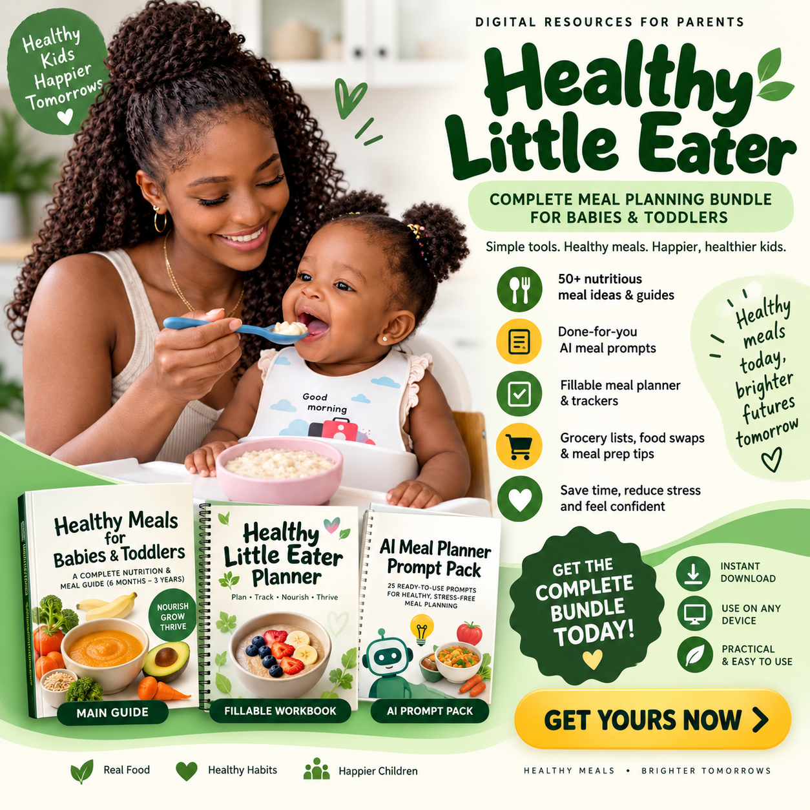

01
The Healthy Growth Meal System
Your main guide to age-appropriate feeding, balanced meals, nutrients, portions, responsive feeding, food refusal, safety and meal preparation.
CORE GUIDEKnow what to feed, how to build balanced meals, and how to create a simple nutritious feeding routine — without wondering what to cook every single day.

MEALTIME SHOULD NOT FEEL THIS HARD
You're constantly searching for meal ideas.
You aren't sure whether meals are balanced.
Your child refuses foods and you don't know what to do next.
You keep repeating the same meals because planning feels overwhelming.
A SIMPLER WAY
Instead of collecting endless recipes, you get a repeatable framework that helps you decide what to serve, how to combine foods, and how to plan ahead.
WHAT YOU GET
One simple digital bundle designed to help you plan, prepare and make better everyday feeding decisions.
Your main guide to age-appropriate feeding, balanced meals, nutrients, portions, responsive feeding, food refusal, safety and meal preparation.
CORE GUIDEA practical fillable planner with meal planning, grocery planning, food variety, picky-eating tracking, meal prep and weekly review tools.
FILLABLE WORKBOOKA collection of reusable planning prompts to help you generate meal ideas, grocery lists, food swaps, weekly plans and more.
RESOURCE VAULTReady-to-use prompts that help you turn the foods available in your kitchen into practical meal ideas and weekly plans.
25 PROMPTSWHY YOU'LL LOVE IT
Stop deciding from scratch at every meal. Build a simple routine for the week.
Use an easy formula to combine staples, protein, healthy fats and produce.
Learn a calmer, pressure-free approach to repeated food exposure.
Adapt the system to foods you already know and commonly prepare.
Use meal prep and planning tools to make nutritious feeding more realistic.
Rotate proteins, grains, fruits and vegetables instead of repeating the same meals.
HOW THE SYSTEM WORKS
Choose the appropriate pathway for 6–8 months, 9–11 months or 12–36 months.
Use the simple meal formula to bring key food groups together.
Use the planners and prompts to create variety without making life complicated.
Look at feeding patterns and routines rather than chasing perfection.
MADE TO FEEL PRACTICAL
Think rice, yam, plantain, beans, eggs, fish, vegetables, fruits and other suitable foods available to your family. The goal is not complicated cooking — it's making better combinations consistently.
GET THE COMPLETE BUNDLE
Get the complete digital toolkit and start using the system today.
ONE-TIME PRICE
QUESTIONS
READY TO MAKE FEEDING SIMPLER?
Get your Healthy Growth Meal System today and take the guesswork out of everyday feeding.
GET THE COMPLETE BUNDLE — GH₵39